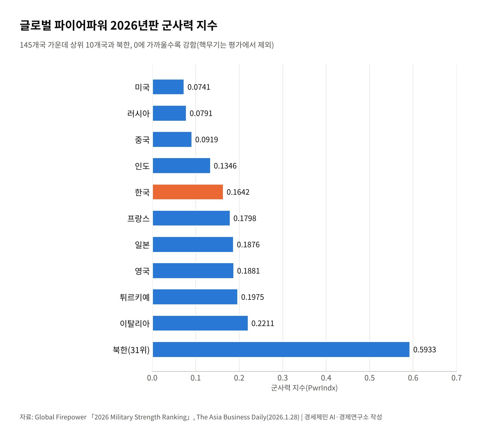
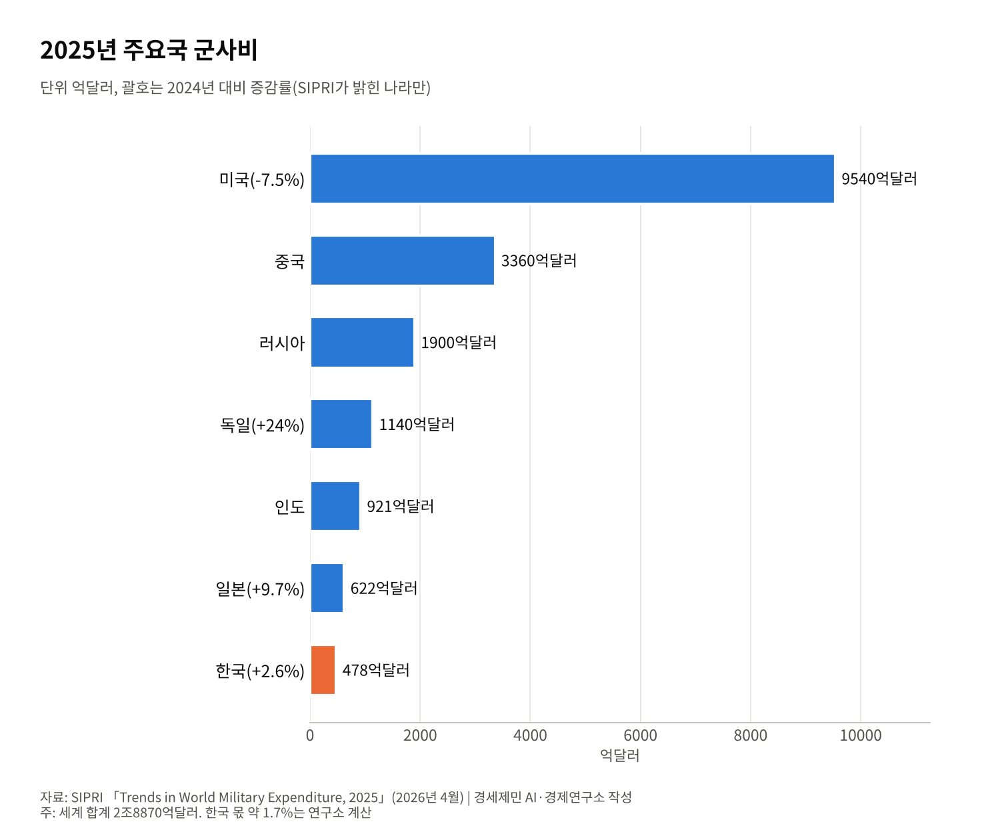
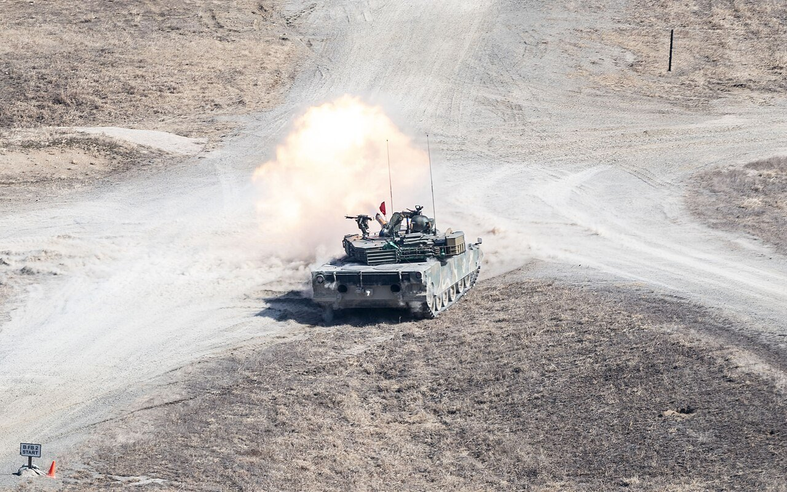

[동맹과 국방] 군사력 세계 5위 한국, 자주국방은 어디까지 왔고 동맹은 무엇을 요구하나
글로벌 파이어파워 2026년판 145개국 중 5위, 북한 31위…핵무기는 지수에서 빠져
SIPRI 2025년 군사비 478억달러, 무기 수출 세계 9위·유럽 나토 수입의 8.6%
공동 설명자료 국방비 GDP 3.5%·미국산 무기 250억달러, 미국대사는 동맹의 '난기류'를 말해
AI경세제민=김갑봉 기자 | 한국이 세계 5위 군사강국이라는 말은 이제 대통령의 입에서도 나온다. 이재명 대통령은 2026년 6월 8일 취임 1년 기자회견에서 한국 군사력을 세계 5위라고 했다. 8월 18일 국무회의에서도 같은 순위를 들었다.
근거는 미국의 군사력 평가 사이트 글로벌 파이어파워(GFP)다. 숫자는 사실이지만 숫자가 세지 않는 것도 있다. 국제기구와 연구기관 자료로 한국 국방의 크기와 한계, 동맹이 요구하는 값을 함께 본다.
145개국 가운데 5위라는 숫자
GFP 2026년판은 145개국을 60개가 넘는 요소로 평가했다. 지수는 0에 가까울수록 강하다. 미국 0.0741, 러시아 0.0791, 중국 0.0919, 인도 0.1346에 이어 한국이 0.1642로 5위다.
6위부터는 프랑스, 일본, 영국, 튀르키예, 이탈리아 순이다. 한국은 2024년판부터 3년 내리 5위를 지켰다. 상위 5개국 가운데 핵무기가 없는 나라는 한국뿐이다.
북한은 0.5933으로 31위다. 2024년판에서는 36위였다. 지수로 보면 남북의 재래식 전력 격차는 크다. 한국은 견인포와 자주포, 호위함, 예비전력에서 높은 점수를 받았다.

지수가 세지 않는 것
GFP는 핵무기를 평가에서 뺀다. 전문가들이 꼽는 가장 큰 한계다. 한국국가전략연구원의 정경운 연구자는 이 순위를 국방력의 척도보다 구호에 가깝다고 봤다. 곱셈에서 한 항이 0이면 결과가 0이 된다는 비유를 들었다.
전북대의 장원준 연구자는 재래식 전력 5~6위라는 평가에 의미가 있다고 봤다. 다만 핵 격차가 억제력을 제약한다고 했다. 두 전문가 모두 인공지능, 드론, 사이버, 우주, 전자전이 지수에 잘 잡히지 않는다고 짚었다.
전쟁 의지, 평시 경제를 전시로 돌리는 능력도 지수 밖에 있다. 5위는 탱크와 병력, 예산을 센 결과다. 억제력의 크기를 말해 주는 숫자는 아니다.
돈으로 본 국방, 478억달러
스톡홀름국제평화연구소(SIPRI)가 2026년 4월 낸 자료를 보면 2025년 세계 군사비는 2조8870억달러다. 11년 내리 늘었다. 미국 9540억달러, 중국 3360억달러, 러시아 1900억달러, 독일 1140억달러, 인도 921억달러 순이다.
한국은 478억달러로 1년 전보다 2.6% 늘었다. 세계 지출의 약 1.7%다(연구소 계산). 일본은 9.7% 늘어 622억달러를 썼고, 국내총생산 대비 1.4%로 1958년 뒤 가장 높았다.
미국 의회조사국은 2025년 한국 국방비를 국내총생산의 2.3%로 봤다. 한미가 2025년 11월 낸 공동 설명자료는 이를 「가능한 한 빨리」 3.5%로 늘린다고 적었다. 2.3%에서 3.5%로 가려면 국방비 비중을 절반 넘게 키워야 한다.

무기 수입국에서 수출국으로
SIPRI 무기이전 자료로 2021~2025년 한국은 세계 9위 무기 수출국이다. 수출은 앞선 5년보다 24% 늘었다. 유럽 나토 국가가 들여온 무기의 8.6%가 한국산이다.
가장 큰 시장은 폴란드다. 폴란드 무기 수입의 47%가 한국산으로 미국산 44%보다 많다. 유럽 무기 수입이 앞선 5년보다 210% 늘어난 흐름을 한국 방위산업이 탔다.
수출은 자주국방의 다른 얼굴이다. 생산 라인이 돌면 단가가 내려가고 전시 증산 여력도 생긴다. 다만 수출 실적이 곧 억제력은 아니다. 정찰, 지휘통제, 미사일 방어처럼 동맹에 기대는 영역이 여전히 남아 있다.
동맹이 요구하는 값
2025년 11월 13일 백악관 공동 설명자료는 동맹의 값을 숫자로 적었다. 한국은 2030년까지 미국산 무기 250억달러어치를 산다. 주한미군에는 모두 330억달러 규모의 포괄 지원을 계획한다.
미국은 한국의 핵추진 공격잠수함 건조를 승인했다. 안규백 당시 국방부 장관은 2026년 6월 핵연료 말고는 건조 여건을 갖췄다고 했다. 한국은 농축도 20% 미만 저농축우라늄에 대한 미국의 협력을 구하고 있다.

미국의 요구는 돈에서 그치지 않는다. 올해 8월 을지 자유의 방패 연합연습은 트럼프 대통령 지시로 규모와 기간이 줄어 21일 일찍 끝났다. 연습의 크기도 동맹 안에서 조율하는 의제가 됐다.
미셸 스틸 주한 미국대사는 10월 21일 한미관계가 「난기류」를 지나고 있다고 말했다. 한국이 6·25전쟁 뒤 크게 성장해 이제 미국의 보호가 필요 없다며 인도태평양에서 함께 이끌자고 했다. 전시작전통제권 전환 시기를 두고는 이견이 있다고 했다.
자주와 동맹, 숫자 너머의 균형
이 대통령은 8월 국무회의에서 동맹과 자주국방이 서로를 강화한다고 했다. 임기가 끝나는 2030년 전에 전시작전통제권을 돌려받겠다고도 했다. 5위라는 숫자는 그 자신감의 근거다.
그러나 지수 5위는 핵 없는 재래식 전력의 순위다. 군사비는 세계의 1.7%이고, 동맹은 국방비 3.5%와 무기 구매 250억달러를 요구한다. 자주국방의 크기는 전력의 숫자보다 그 숫자로 무엇을 스스로 결정할 수 있느냐로 재야 한다. 동맹과의 협상력이 바로 그 시험대다.
참고문헌
기관 자료
- Global Firepower, "2026 Military Strength Ranking", 2026년. https://www.globalfirepower.com/countries-listing.php
- Global Firepower, "South Korea Military Strength 2026". https://www.globalfirepower.com/country-military-strength-detail.php?country_id=south-korea
- The White House, "Joint Fact Sheet on President Donald J. Trump's Meeting with President Lee Jae Myung", 2025년 11월 13일. https://www.whitehouse.gov/fact-sheets/2025/11/joint-fact-sheet-on-president-donald-j-trumps-meeting-with-president-lee-jae-myung/
- Congressional Research Service, "The August 2025 U.S.-South Korea Summit"(IN12603), 2025년 9월 3일. https://www.everycrsreport.com/reports/IN12603.html
연구 논문과 보고서
- SIPRI, "Trends in World Military Expenditure, 2025"(Fact Sheet), 2026년 4월. https://www.sipri.org/publications/2026/sipri-fact-sheets/trends-world-military-expenditure-2025
- SIPRI, "Trends in International Arms Transfers, 2025"(Fact Sheet), 2026년 3월. https://www.sipri.org/publications/2026/sipri-fact-sheets/trends-international-arms-transfers-2025
언론 보도
- Kim Min-young, "Lee's claim that South Korea's military is the world's fifth-strongest faces a reality check", Korea JoongAng Daily, 2026년 6월 19일. https://www.koreajoongangdaily.com/business/lees-claim-that-south-koreas-military-is-the-worlds-fifthstrongest-faces-a-reality-check/12724921
- The Asia Business Daily, "South Korea Ranks 5th in Global Military Power Without Nuclear Weapons", 2026년 1월 28일. https://view.asiae.co.kr/en/article/2026012807021598638
- TASS, "South Korea ranks as the world's fifth-strongest military power — president", 2026년 8월 18일. https://tass.com/world/2174703/amp
- The Korea Times(연합뉴스), "Defense chief to propose target year for wartime OPCON transfer to Korean, US presidents at year-end", 2026년 6월 14일. https://www.koreatimes.co.kr/southkorea/defense/20260614/defense-chief-to-propose-target-year-for-wartime-opcon-transfer-to-korean-us-presidents-at-year-end
- The Asia Business Daily, "Democratic Party Pushes Back Against People Power Party's 'Excessive Delight' Criticism"(을지 자유의 방패 연습 축소·조기 종료 사실 확인용), 2026년 8월 21일. https://view.asiae.co.kr/en/article/2026082115121403356
- The Korea Times(연합뉴스), "Top US envoy cites 'turbulence' in S. Korea-US alliance amid rift in security, trade priorities", 2026년 10월 21일. https://www.koreatimes.co.kr/foreignaffairs/20261021/top-us-envoy-cites-turbulence-in-s-korea-us-alliance-amid-rift-in-security-trade-priorities
[사진 출처]
- [사진1] U.S. Air Force photo by Staff Sgt. Ashley Mikaio, "51st FW assets participate in CALFEX with U S and ROK Army (8894230).jpg", 위키미디어 공용, 퍼블릭 도메인. https://commons.wikimedia.org/wiki/File:51st_FW_assets_participate_in_CALFEX_with_U_S_and_ROK_Army_(8894230).jpg
※ 이 기사는 AI 프로그램 클로드를 활용해 작성했습니다.
관련기사
- [동맹과 국방] 전작권 전환, 한국은 '2028년' 미국은 '2029년 1분기'…12월 안보협의회의가 가른다
- [정상외교] 같은 동맹 같은 청구서, 유럽이 한국의 대미 협상을 지켜본 이유
- [정상외교] 한미정상회담 해외언론 다시 읽기, 1년 뒤 남은 것과 사라진 것
- [정상외교] 2차 한중정상회담 아홉 달, 서해에서 옮겨진 것과 남은 것
저작권자 © AI경세제민 무단전재 및 재배포, AI학습 및 활용 금지